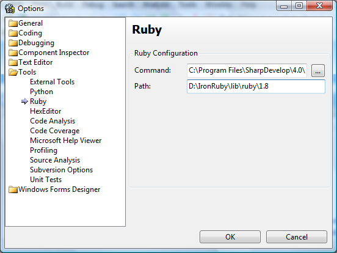
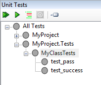
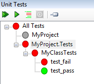
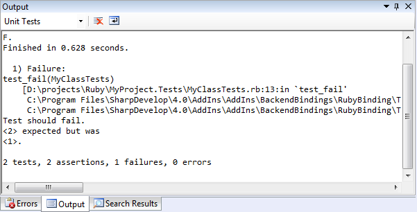
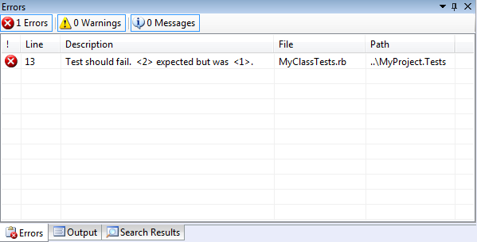

SharpDevelop 4 has been updated to support unit testing with IronRuby.
It uses the Ruby testing framework Test::Unit so you will need to have the Ruby standard library on your machine. IronRuby 1.0 targets Ruby 1.8.6 and includes it in its download so one way to get the Ruby standard library is to download IronRuby from codeplex and install it.
SharpDevelop then needs to know where the Ruby standard library exists. This can be done by setting the path to the Ruby library in the Options dialog (Tools | Options | Tools | Ruby | Path), as shown below.

Now we need to create some tests. Create two IronRuby projects one to hold the unit tests and the other to hold the code that will be tested.
In the test project we add the following simple test class that has two tests, one that will pass and one that will fail.
require 'test/unit' require 'MyClass' class MyClassTests < Test::Unit::TestCase def test_pass myclass = MyClass.new assert_equal(1, myclass.return_one(), 'Test should work') end def test_fail myclass = MyClass.new assert_equal(2, myclass.return_one(), 'Test should fail') end end
Once this class is created you should see the unit tests displayed in the Unit Tests window (View | Tools | Unit Tests).

In the other project we create a new class with the following code.
class MyClass def return_one return 1 end end
Now in the project containing the unit tests we need to add a project reference to the project containing MyClass. This is so that SharpDevelop can set up the load paths correctly allowing MyClass to be found when the unit tests are run.
Once the project reference is added the unit tests can be run in the normal way by right clicking in the Unit Tests window and selecting Run tests. You can run all the tests in a project, all tests in a class or a single test method.

The output generated when running the unit tests is shown in the Output window.

Test failures are displayed in the Errors window. Clicking an error will open the corresponding code in the editor.
